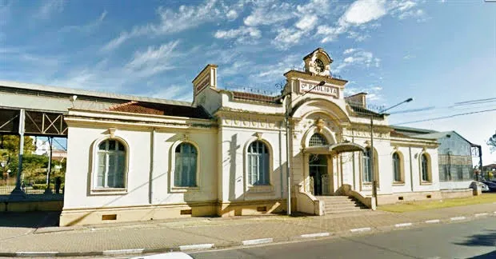
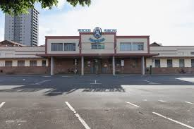

O Engenho Central de Piracicaba, localizado às margens do Rio Piracicaba,
na cidade de Piracicaba, foi construído por Estêvão Ribeiro de Sousa Resende,
o Barão de Rezende, em 1881, com o objetivo de substituir o trabalho escravo
pelo assalariado e pela mecanização.
Fontes:Wikipedia,
Imagem
Estação da Paulista

Estação da Paulista
Inicialmente surgiu com a idealização da linha ainda no século XIX, com a intenção de ligar a cidade de Limeira a Piracicaba,
mas somente em 1916 começou a ser construída pela Companhia Paulista de Estradas de Ferro.
Aberta em 30 de julho de 1922, a Estação de Piracicaba Paulista recebeu esse nome para diferenciá-la da Estação Sorocabana,
situada a dois quilômetros dali, no centro da cidade. As linhas da Paulista e da Sorocabana não se encontravam, apenas de cruzavam,
um pouco antes de chegar à nova estação.
Fonte: Semae,
Imagem
Mercado Municipal de Piracicaba

Mercado Municipal
O Mercado Municipal de Piracicaba teve suas obras concluídas 28 de fevereiro de 1887, mas foi inaugurado apenas em 28 de fevereiro de 1888.
Uma das mais representativas construções industriais de Piracicaba do período, hoje possuí cerca de 150 boxes, que se destinam a venda de frutas, cereais, legumes,
hortaliças e demais produtos alimentícios, além de pastelarias e açougues.
Fonte: Semae,
Imagem
Museu da Água
Museu da Água
Devido a necessidade de reservatórios de água em Piracicaba foi inaugurado, por D. Pedro II, em 2 de novembro de 1886 a Primeira Estação de Captação e Bombeamento de Água de Piracicaba.
O atual Museu da Água “Francisco Salgot Castillon” ocupa todo o espaço, cerca de 12 mil m², às margens do Rio Piracicaba,
ao lado do Salto, que pertenceram ao reservatório, e preserva seus detalhes arquitetônicos.
Fonte: Semae,
Imagem
Museu Prudente de Moraes
Museu Prudente de Moraes
A antiga residência do ex-Presidente da República é atualmente o Museu Histórico e Pedagógico Prudente de Moraes, passou por recuperação da estrutura física e por uma nova reestruturação museográfica e museológica contemplando a vida pública,
política e privada de Prudente de Moraes e a história de Piracicaba retratando importantes fases do município, sua formação, mudanças econômicas e sociais decorrentes do grande desenvolvimento da lavoura e da indústria.
Fonte: Museu prudente de Moraes,
Imagem
Parque do Mirante
Parque do Mirante
O Parque do Mirante possuí vista privilegiada do Rio Piracicaba, o Salto, a Rua do Porto e o centro da cidade. O projeto de parque foi idealizado pelo Barão de Rezende ainda no século XIX,
e durante as décadas de 1910 e 1930 o local serviu para a realização de piqueniques e caminhadas.
Fonte: Semae,
Imagem